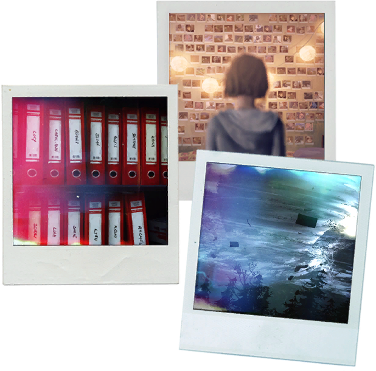

关于 这款游戏
“认为过去的就是已经死亡了的是一个巨大的错误。万事万物，只要它发生过，它就影响着现在。现在就是过去的一切不断糅合浓缩在这一秒的结果。
你，也一样，就是你的过去,就好像你的面容是你的自传一样。你之所以是现在的你就是因为曾经的你，就是因为你过去无数代的遗传下的东西，
就是因为环境中每一个影响过你的事物，比如你所遇到的每一个男人和女人，你所读过的每一本书，你所拥有过的每一段经历，而这一切，都聚集
在你的记忆、你的身体、你的性格、你的灵魂之中。城市，国家，民族，亦是如此。如果没有过去，它们永远无法被我们所理解” ————维尔·杜兰特
